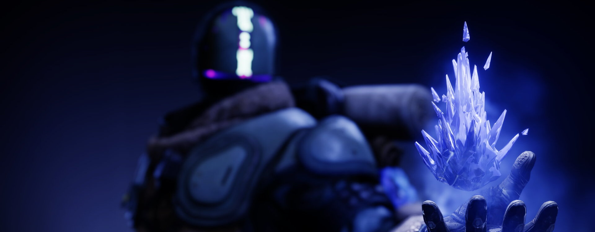
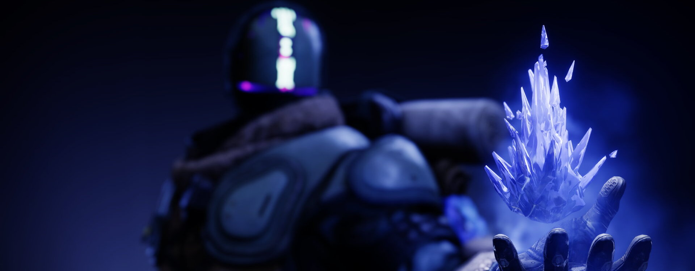

L'Arcaniste
Guerriers érudits de la Lumière, les Arcanistes se dévouent à l'étude du Voyageur et de ses pouvoirs. L'esprit d'un Arcaniste regorge de terribles secrets, et vacille entre génie indéniable et folie véritable. Sur le champ de bataille, ces mystères redoutables pourraient faire éclater la réalité elle-même
Je l'ai entendu pour la première fois dans les tunnels creusés par les Esclaves sur Callisto, au moment où j'ai vu la Lumière se faire arracher de mon ami : un carillon chaotique, comme le bruit du verre qui se brise, sonnant dans chaque recoin de mon esprit. À ce moment-là, je l'avais ignoré et j'avais craché les flammes de la vengeance sur la vermine de la Ruche.
Il est revenu quand l'engin de malheur de Ghaul a enserré le Voyageur et que la Lumière a quitté ma carcasse : un chœur froid, comme un chant décousu qui hurlait pour qu'on l'entende. Je m'y suis accroché, tout en frissonnant dans les décombres de la dernière Cité. Il a étouffé la marche des Centurions et a concentré mon esprit sur la volonté de survivre.
C'est dans l'ombre de la Pyramide d'Europe que je compris enfin. Ce qui n'était jusque-là que du bruit devint une harmonie glaciale, émergeant de la dissonance, et que je pouvais enfin saisir. Je me joignis au chant et, alors que ma voix complétait la mélodie, mes mains agrippèrent un bâton de glace : le chaos avait pris forme. Il emprisonna ma poigne dans le givre et le chant se mit à résonner dans ma chair. J'étais devenu son instrument, et il était le mien. Quand notre mélopée disait au monde de s'apaiser, il nous obéissait.
Sombreur
Courroux de l'hiver
Invoquez un bâton stasique. Tant que votre Super est actif :
Projeter un déluge d'éclats stasiques qui gèlent les cibles.
Envoyer une onde de choc qui brise toutes les cibles gelées.
- Grenades